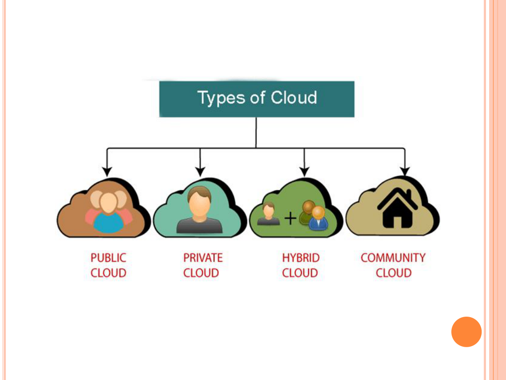

Marks: 5
Q.4 — Assignment 1
Write and explain various types of deployment models of Cloud Computing.
Answer
Cloud deployment models define how cloud services are made available. Unit-1 notes describe four types of cloud:

Diagram Source: Unit-1 E-Notes — Page 6 (Types of Cloud)
1. Public Cloud
Public cloud is open to all to store and access information via the Internet using the pay-per-usage method. Computing resources are managed and operated by the Cloud Service Provider (CSP).
Advantages: Lower cost; maintained by CSP; easier to integrate / flexible; location independent; highly scalable; accessible by the general public with no limit on number of users.
Disadvantages: Less secure because resources are shared publicly; performance depends on high-speed Internet; client has no control of data.
Examples: Amazon EC2, IBM SmartCloud Enterprise, Microsoft, Google App Engine, Windows Azure Services Platform.
2. Private Cloud
Also known as an internal cloud or corporate cloud. Organizations build and manage their own data centers internally or by a third party. It can be deployed using open-source tools such as OpenStack and Eucalyptus.
Advantages: High security and privacy; better performance; quick on-demand IT resource delivery; full organizational control.
Disadvantages: Skilled people required; limited area of operations; not suitable without prebuilt infrastructure / sufficient manpower.
3. Hybrid Cloud
Hybrid Cloud = Public Cloud + Private Cloud. It is partially secure: public services can be accessed by anyone, while private-cloud services are accessed only by the organization’s users.
Advantages: More security than public cloud; faster delivery of products/services; reduces risk; flexible (public) + secure (private) resources.
Disadvantages: Security not as good as private cloud; complex management; reliability depends on CSPs.
Examples: Google Application Suite, Office 365, Amazon Web Services.
4. Community Cloud
Allows systems and services to be accessible by a group of several organizations to share information within a specific community. Owned, managed and operated by one or more organizations, a third party, or a combination.
Community Cloud
share
Community Cloud
e.g. Health Care community
Diagram Source: Based on Unit-1 E-Notes — Pages 16–17
Example: Health Care community cloud.
Advantages: Cost-effective sharing; collaborative with better security than public cloud.
Disadvantages: Not suitable for every organization; security not as good as private cloud; fixed storage/bandwidth shared among members.
Important Points to Remember- Four models: Public, Private, Hybrid, Community.
- Public = CSP-managed, pay-per-use; Private = internal/corporate.
- Hybrid = Public + Private; Community = shared by related organizations.
Source from Provided Material
Unit-1 E-Notes — Pages 6–18; Assignment1_CC handwritten notes — Pages 6–7; WhatsApp Assignment-1 screenshot